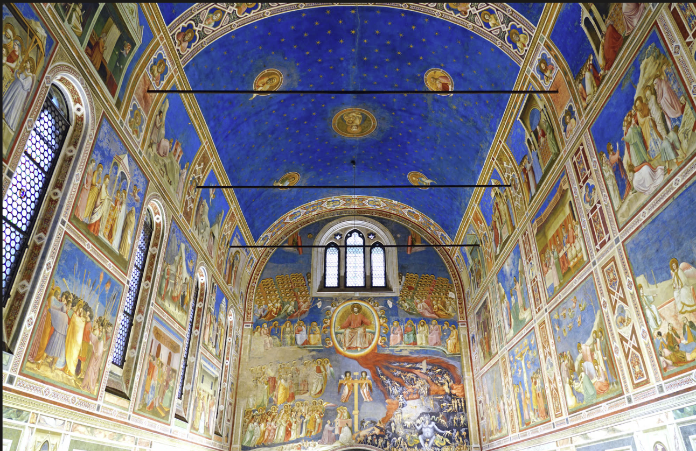

Art history meets business ethics.
This article began with my interest in finding a connection between art history and business. I ultimately chose Enrico Scrovegni's commission of Giotto's Arena Chapel as a case study for exploring how individuals and organizations navigate the relationship between financial success, ethical responsibility, and charitable giving.
The project allowed me to combine ideas from several of my courses, including art history, business ethics, professional communication, research, and data visualization.
How should we think about charitable giving when the way wealth is created also raises ethical questions?
The Arena Chapel provides a historical lens for examining questions that remain relevant to modern organizations: reputation, responsibility, stakeholder expectations, philanthropy, and ethical business conduct.
Interdisciplinary Research
I researched scholarship across art history, religious history, economics, business ethics, and corporate philanthropy to understand the case from multiple perspectives.
Historical-to-Modern Analysis
I used the Arena Chapel as a historical case and connected its questions about wealth and reputation to modern corporate philanthropy and stakeholder expectations.
Data Visualization
I created visualizations examining the growth of corporate philanthropy and public expectations surrounding honesty and ethical conduct among business leaders.
Giving does not exist separately from conduct.
One of my biggest takeaways from this project was that philanthropy can create genuine social value while also affecting reputation. Evaluating charitable giving therefore requires looking beyond the donation itself and considering the broader behavior and values of the organization behind it.
Read the Complete Article →